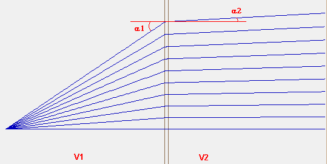
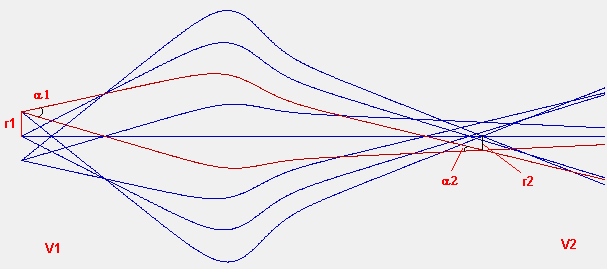
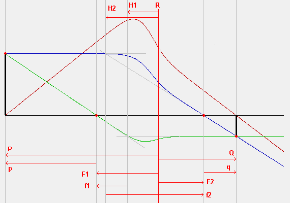
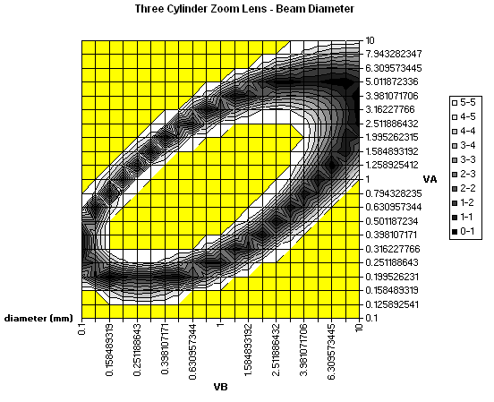
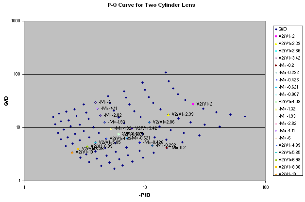
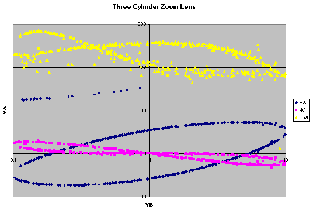
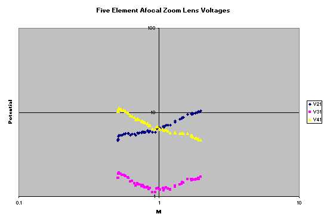

Purpose
The examples in this directory demonstrate analyzing basic electrostatic lens properties, such as determination of focal points, magnification, and aberration coefficients, as well as analyzing basic theorems (Helmholtz-Lagrange Law and Snell's Law) and plotting various lens curves automatically in Excel.
These examples assume the reader has some familiarity with electrostatic lens theory. Introductory material can be found elsewhere such as in [2-4].
Files in this demo:
- README.html - Description of these examples
- snell.iob - Demonstration of Snell's Law
- helmholtz_lagrange.iob - Demonstration of the Helmholz-Lagrange Law
- cardinal_points.iob - Computes cardinal points of a lens (e.g. focal points) via ray tracing.
- surface_plot.iob - Surface plot of beam size v.s. choice of two voltages in a three-cylinder "zoom" lens.
- pq.iob - Generates a P-Q curve for a two-cylinder lens. Image position (P) and object position (Q) relative to the reference plane (x=0) are computed and plotted for combinations of lens voltage ratio (V2/V1) and lens linear magnification (M).
- zoom_lens_curve.iob - Generates a lens focal curve for a three-cylinder "zoom" lens. plots curves of focus locus, as well as linear magnification and spherical and chromatic aberration coefficients. This is an extension of surface_plot.iob.
- zoom_lens_curve_75.iob - similar to lens_curves.iob but with different lens parameters.
- zoom_afocal.iob - tunes lens voltages for a five-cylinder afocal zoom lens.
- confusion_disc.iob - calculates disc of least confusion and plots beam size along axial distance.
- Example: lens_properties\particle_spread_measurement (folder) - measures the spatial and temporal distribution of a bunch of particles at each step in their trajectory integration through a simple lens.
Each example is described below.
Important notice on voltage conventions: Here, and throughout this article, we assume that potentials given in the formulas are conventionally referenced relative to 0V being understood as the potential at which the particle would have zero kinetic energy. This provides an easy relationship between kinetic energy, potential energy, and electric potential (potential energy per charge). For example, if an electron of charge (-1 e) has a kinetic energy of 5 eV in a region having the same potential as some lens, then the voltage on that lens is taken to be 5V (or -(5/q)V for a particle of charge q in elementary charge units (e)). It is not necessary to use this definition of 0V when physically setting up a system in the lab. After all, the electric field (negative gradient of potential) remains unchanged if you uniformly add an arbitrary constant potential to all electrodes in your system. It may be convenient to set the first electrode to earth ground, for example, since that avoids the need of another power supply.
Snell's Law (snell.iob)
Snell's Law[1] in light optics has an analogous form in charged particle optics. Consider a plane that defines a boundary between regions of potential V1 and V2. In practice it is impossible to have a sharp change in potentials like this since it corresponds to infinite fields at the plane; nevertheless, we can approximate this with a gradual potential change over a very short distance using two ideal grids. Now, if a particle in the region of potential V1 crosses the boundary at an angle α1 normal to the boundary, it enters the region with potential V2 at an angle α2 normal to the boundary, according to the following relationship:
sin(α1) / sin(α2) = (V2 / V1)1/2

The square root of voltage could be interpreted as a refractive index [2].
The present example demonstrates Snell's Law by showing that (V1/V2)1/2*sin(α1)/sin(α2) is approximately 1 for a range of α1.
Usage
Running the example:
- 1. View snell.iob. (Click View on main screen and select the snell.iob file.)
- 2. If this is your first time using the example, you will be asked to refine (confirm that and press Refine).
- 3. Fly particles. (Click Fly'm.)
- 4. View results in Log Window. (Click Log tab and scroll to top.) Observe consistency in log output, confirming Snell's Law holds quite closely.
Helmholtz-Lagrange Law (helmholtz_lagrange.iob)
The Helmholtz-Lagrange Law relates the linear magnification M and angular magnification m of rays through an electrostatic lens to the ratio of potentials between the two ends of the lens.
(V1/V2)1/2 = M m

Linear magnification is M = r2/r1, where r1 and r2 are the displacements from the axis of the object and image locations. Angular magnification m = α2/α1, where α1 and α2 are the pencil angles of the object and image points. The pencil angle is the half angle of the beam.
The present example demonstrates the Helmholtz-Lagrange Law by showing that (V1/V2)1/2 / (M m) is approximately 1 for a certain two cylinder lens.
See also [2-4] for general background, and for application to lenses attached to HDAs see Zouros and Benis[6].
Usage
Running the example:
- 1. View helmholtz_lagrange.iob. (Click View on main screen and select the helmholtz_lagrange.iob file.)
- 2. If this is your first time using the example, you will be asked to refine (confirm that and press Refine).
- 3. Fly particles. (Click Fly'm.)
- 4. To best view the particles, enable asymmetric zooming. (In Display tab, uncheck =Zoom.) Zoom in on the rays. (Make a narrow box selection around the rays and right click the mouse to zoom.) Compare the result to the figure above.
- 5. View results in Log Window. (Click Log tab and scroll to top.) Compare results to positions of rays on the screen. Also observe consistency checks at bottom of log output, confirming the Helmholtz-Lagrange Law approximately holds. The law holds better if rays are kept closer to the axis (due to the paraxial approximation assumed).
Cardinal Points (cardinal_points.iob)
This example computes cardinal points of a lens via ray tracing. It needs to trace three particles:
- Particle #1 (red) starts at the object position (P), on-axis, and is directed at a small angle relative to the axis. It crosses the axis at the image position (Q). This allows the determination of Q.
- Particle #2 (blue) is the first principle ray. It starts at the object position (P), off-axis (positive y), and is directed parallel to the axis toward the image. It crosses the axis at the second focal point (F2) and finally reaches the image (Q). This allows the determination of F2.
- Particle #3 (green) is the second principle ray. For simulation purposes, we let it start at the image position (Q), off-axis (negative y where first principle ray crossed) and be directed parallel to the axis toward the object. It crosses the axis at the first focal point (F1) and finally reaches the object (P) at the starting point of the first principle ray. This allows the determination of F1. This is actually the same path but reversed in direction that a real physical particle would travel, but it's convenient to trace the ray in the reversed direction like this in order to determine the location of F1. The user program automatically moves the y starting position of particle #3 to the y position where particle #2 crosses the image plane Q.

P, Q, F1, and F2 can each be interpreted as distances measured relative to an arbitrary reference plane (R), which is typically chosen to be the center of the center lens element and given coordinate x=0. Conventionally, the distances are signed (e.g. P is negative and Q is positive). The distances F1 and F2 are called the mid-focal lengths.
The intersection of the two asymptotes of the each principle ray determine the first and second principle planes (H1 and H2). In practice, one of the asymptotes may be approximated as the tangent of the ray through the focal point (assuming the lens is not too strong). F1 and F2 measured relative to H1 and H2 respectively are labeled f1 and f2, and these are called the focal lengths. P and Q measured relative to F1 and F2 respectively are labeled p and q.
In summary, the symbols as commonly used by Heddle[2] and elsewhere are
- R - reference plane. The location of this plane is arbitrary, but it is usually, by convention, taken as the center of the center lens and defined as x=0.
- P - object position. This is the location of the object being imaged. It is relative to R. The principle rays intersect here.
- Q - image position. This is the location of the image of the object P. It is relative to R. The principle rays intersect here too.
- F1 - first focal point (mid-focal distance). This is the location of the intersection of second principle ray and axis. It is relative to R.
- F2 - second focal point (mid-focal distance). This is the location of the intersection of the first principle and axis. It is relative to R.
- H1 - first principle plane. This is the location of the intersection of the second principle ray asymptotes. One of the asympotes may be approximated as the tangent of the ray through F1 (assuming the lens is not too strong).
- H2 - second principle plane. This is the location of the intersection of the first principle ray asymptotes. One of the asympotes may be approximated as the tangent of the ray through F2 (assuming the lens is not too strong).
- p - This is the distance of P relative to F1.
- q - This is the distance of Q relative to F2.
Usage
Running the example:
- 1. View cardinal_points.iob. (Click View on main screen and select the cardinal_points.iob file.)
- 2. If this is your first time using the example, you will be asked to refine (confirm that and press Refine).
- 3. Fly particles. (Click Fly'm.)
- 4. To best view the particles, enable asymmetric zooming. (In Display tab, uncheck =Zoom.) Zoom in on the rays. (Make a narrow box selection around the rays and right click the mouse to zoom.) Compare the result to the figure above.
- 5. View results in Log Window. (Click Log tab and scroll to top.) Compare results to positions of rays on the screen. Also observe consistency checks at bottom of log output.
- 6. Try different values of image position (P). In Variables tab, adjust _P_D to, say, -2, click Fly'm, and observe Log output. Note that P here is expressed in units of lens diameters, and lens diameter (D) is given by another variables _D_mm in mm (100 mm here).
- 7. Observe particle definitions used. (In Particles tab, click Define. Note how the first three particles are defined. The fourth particle is ignored by the program and only used for display.)
It appears the particular distance Δy chosen for rays from the axis doesn't affect results much in this example, as long as Δy is below about 10 grid units. In general, it's probably questionable whether real accuracy is improved using Δy below one grid unit or even a multiple of a grid unit. One grid cell doesn't really model non-linear fields that well either. In summary, here are results from the Log window for various Δy values:
Delta[y] Q pq/(f1*f2) Newton's Rule Check (expect 1) 0.01 203.246732 0.999832164 0.1 203.2428658 0.999834845 1 202.7873314 0.999754401 2.5 201.9665761 1.000271668 5 201.3856504 0.999521874 10 198.6796219 0.99479237 15 194.2111471 0.988462716 20 188.0236995 0.97789962 30 170.6948855 0.948160348 40 147.176579 0.910938939
Surface Plot (surface_plot.iob)
This example demonstrates the measurement and plotting of some beam parameter as a function of two other parameters that are varied over a series of runs. The present example is of rays traveling through a three-cylinder "zoom" lens. In each run, a user program measures the focus point size (i.e. diameter of the disc of least confusion) as a function of the voltages on the center and exit lens. This is plotted in real-time as a surface plot in Excel. The minimums on the surface plot demonstrate where the lens is properly focused.

Usage
Running the example:
- 1. View surface_plot.iob. (Click View on main screen and select the surface_plot.iob file.)
- 2. If this is your first time using the example, you will be asked to refine (confirm that and press Refine).
- 3. Fly particles. (Click Fly'm.) A 2D surface plot of beam diameter as a function of two lens voltages is interactively generated in Excel as each combination of lens voltages is tried. You may wish to experiment with the variables in the Variables tab.
P-Q Curves for Two-Cylinder Lens (pq.iob)
This example generates a P-Q curve for a two-element lens. Image position (P) and object position (Q) relative to the reference plane (x=0) are computed and plotted for combinations of lens voltage ratio (V2/V1) and lens linear magnification (M) chosen. The plots are similar to those in Figure 1.4 of Heddle[2] and Figure 5.9 of Moore[3] (taken from Read).

This is a quite instructive example of SIMION user programming, illustrating real-time Excel plotting, simplex optimization, and automation of a series of runs.
Usage
Running the example:
- 1. View pq.iob. (Click View on main screen and select the pq.iob file.)
- 2. If this is your first time using the example, you will be asked to refine (confirm that and press Refine).
- 3. Fly particles. (Click Fly'm.) A 2D scatter plot is interactively generated in Excel as each combination of lens V2/V1 voltage ratio and linear magnification M is tried. Points are plotted at the coordinates of P and Q required to obtain these V2/V1 and M values. You may wish to experiment with the variables in the Variables tab.
Three-Cylinder "Zoom" Lens Focal Curves (zoom_lens_curve.iob)
This example is similar in purpose to the Surface Plot example but goes further. The Surface Plot example provides a rough view of how one parameter responds to variations in two other parameters. One can roughly see from the plots where the surface minimums are, but it does not precisely identify the locations of the minimums. This example example uses a (Monte-Carlo) technique and simplex optimization routine to precisely identify locations of some representative set of minimums. These minimums are plotted as a curve (XY scatterplot rather than a surface plot as before). Furthermore, linear magnification and spherical and chromatic aberration coefficients are also plotted on the same graph.
There graph shown is very similar to the one given in Figure 5.10 of Moore[3] (taken from Read). A similar example (zoom_lens_curve_75.iob) with different system parameters is very similar to the Figure 4.6 of Heddle[2] (which plots all three curves). Interestingly, the SIMION results show an additional blue line in the upper-left, indicating an additional region in which the lens achieves a type of focus (it can be instructive to examine the shape of the trajectories in the special region). Notice also that the blue curve is a more precise representation of the the plot given in the surface_plot.iob example.

This is a quite instructive example of SIMION user programming, illustrating real-time Excel plotting, simplex optimization, and automation of a series of runs.
Usage
Running the example:
- 1. View zoom_lens_curve.iob. (Click View on main screen and select the zoom_lens_curve.iob file.)
- 2. If this is your first time using the example, you will be asked to refine (confirm that and press Refine).
- 3. Fly particles. (Click Fly'm.) A 2D scatter plot is interactively generated in Excel. The locus of voltages VB and VA that generate a focus are displayed, along with corresponding curves for linear magnification and third-order spherical aberration coefficient (Cs) and axial chromatic aberration coefficient (Cc). You may wish to experiment with the variables in the Variables tab.
- 4. You may also wish to try out zoom_lens_curve_75.iob, which is similar but uses different lens sizes and parameters.
Tuning lens voltages for five-cylinder afocal zoom lens (zoom_afocal.iob)
A five cylinder lens can operate as an afocal (telescopic) zoom lens. A lens is afocal if it has no focal points: rays entering the lens parallel to the axis exit the lens parallel to the axis. The lens can simultaneously be a zoom lens (as in zoom_lens_curve.iob) in that given fixed object and image positions, a range of linear magnifications can be chosen by appropriate lens voltage selection.
This example plots the required middle voltages V2, V3, V3 of a five-cylinder lens required for the lens to operate as an afocal zoom lens over a range of magnifications. V1 and V5 are held constant. The result plot resembles Fig. 4.9 of Heddle[2].

The optimizer for the lens voltages is somewhat sensitive. Care would be needed if the parameters are modified. The V2, V3, and V4 values are initialized to give a certain set of results, but there are additional ranges of voltages that also seem to converge or are close to convergence.
Usage
Running the example:
- 1. View zoom_afocal.iob. (Click View on main screen and select the zoom_afocal.iob file.)
- 2. If this is your first time using the example, you will be asked to refine (confirm that and press Refine).
- 3. Fly particles. (Click Fly'm.) A 2D scatter plot is interactively generated in Excel. As each linear magnification M is scanned, corresponding required voltage ratios V2/V1, V3/V1, and V4/V1 are plotted. You may wish to experiment with the variables in the Variables tab (but note caution about sensitivity above).
Particle spread measurement example
The Example: lens_properties\particle_spread_measurement sub-example measures the spatial and temporal distribution of a bunch of particles at each step in their trajectory integration through a simple lens.
Beam Radius and Disc of Least Confusion (confusion_disc.iob)
The example computes the disc of least confusion for an arbitrary beam. Ray paths are stored in a large array during trajectory integration and subsequently analyzed. Beam diameter as a function of axial distance is also plotted.
Usage
Running the example:
- 1. View confusion_disc.iob. (Click View on main screen and select the confusion_disc.iob file.)
- 2. If this is your first time using the example, you will be asked to refine (confirm that and press Refine).
- 3. Fly particles. (Click Fly'm.) Disc of least confusion is output to the Log window tab, and a 2D scatter plot of beam radius v.s. axial distance is interactively generated in Excel.
Going Further
For creating your own examples, it is recommended you study the source code of the Lua user programs. Many of the user programs reuse the functions in the file lensutil.lua, and you may want to do so as well. A number of the more involved optimization examples use a useful construct called couroutines to allow the code to be expressed more naturally than otherwise. Many plot in Excel, but you can adapt the code to plot in some other program if you wish.
Changes
2009-10-07 - Add clear() function to beamutil.lua.
See Also
- Other SIMION examples:
- Example: Einzel lens
- Example: HDA (hemispherical deflection analyzer) applies the method used in surface_plot.iob.
- Example: Excel provide additional information on Excel plotting.
- [1] Wikipedia: Snell's Law. [http://en.wikipedia.org/wiki/Snell's_law].
- [2] D.W.O Heddle. Electrostatic Lens Systems, 2nd ed. Taylor & Francis. 2000. [http://www.amazon.com/Electrostatic-Lens-Systems-D-W-O-Heddle/dp/0750306971]. -- 2D cylindrical lens theory
- [3] J. Moore, C. Davis, and M. Coplan. Building Scientific Apparatus: A Practical Guide to Design and Construction, 3rd ed. Perseus Books. 2003. -- contains a "Chapter 4 - Charged-Particle Optics" with ~40 pages of good introduction on basic lens theory and other particle optics introductions. [http://books.google.com/books?id=EEepETTBt6AC] (partial preview online)
- [4] Experimental Methods in the Physical Sciences, volume 29A, chapter 5 "Electron and Ion Optics" by George C. King -- a short 18 page summary of lens theory, similar to Heddle. [http://www.elsevier.com/wps/find/bookdescription.cws_home/674145/description]
- [5] V Ovalle, D R Otomar, J M Pereira, N Ferreira, R R Pinho and A C F Santos. Studying charged particle optics: an undergraduate course. Eur. J. Phys. 29 (2008) 251-256 [http://www.iop.org/EJ/abstract/-ffissn=0143-0807/-ff30=all/0143-0807/29/2/007] -- explains how to examine three-element lens properties using SIMION for an undergraduate course.
- [6] Zouros and Benis. Optimal energy resolution of a hemispherical analyzer with virtual entry. Applied Physics Letters 86, 094105, 2005. doi:10.1063/1.1871339; online -- application of Helmholtz-Lagrange to HDAs
- Omer Sise, Melike Ulu, and Mevlut Dogan. Multi-element electrostatic lens systems for focusing and controlling charged particles. Nuclear Instruments and Methods in Physics Research Section A. Volume 554, Issues 1-3, 1 December 2005, Pages 114-131. (Department of Physics, Science and Arts Faculty, Afyon Kocatepe University, Turkey.) [doi:10.1016/j.nima.2005.08.068] ; [http://arxiv.org/abs/physics/0503145 (online preprint)] (Additional material on Omer Sise's home page, [http://www2.aku.edu.tr/~omersise/]) -- examples of graphing n-cylinder lens properties in SIMION.
- Omer Sise, Melike Ulua and Mevlut Dogana. "Aberration coefficients of multi-element cylindrical electrostatic lens systems for charged particle beam applications" Nucl. Instrum. Meth. A 573/3 (2007) 329-339. [http://dx.doi.org/10.1016/j.nima.2007.01.051]
- Omer Sise, Melike Ulua and Mevlut Dogan. "Characterization and modeling of multi-element electrostatic lens systems" Rad. Phys. Chem. 76/3 (2007), 593-598. [http://dx.doi.org/10.1016/j.radphyschem.2005.11.037]
- Omer Sise, David Manura and Mevlut Dogan. "Exploring focal and aberration properties of electrostatic lenses through computer simulation." Omer Sise et al 2008 Eur. J. Phys. 29 1165-1176 [http://dx.doi.org/10.1088/0143-0807/29/6/005] -- introduction to lens property simulations in SIMION, from a teaching perspective.
- Bernheim M. Evaluation of aberrations of immersion objective lenses in relation to electron emission microscopy. Eur. Phys. J. Appl. Phys. 36, 193-204 (2006) [http://dx.doi.org/10.1051/epjap:2006121] -- immersion objective lens properties calculated in SIMION.
- Bernheim M. Image acquisition with immersion objective lenses using electrons emitted with several tenths of an electron volt energies: Towards high spatial resolution ESCA analysis. Ultramicroscopy 106 (2006) 398-412. [http://dx.doi.org/10.1016/j.ultramic.2005.11.007]
- Omer Sise, Nimet Okumus, Melike Ulu and Mevlut Dogan. "Computer simulation of electrostatic aperture lens systems for electron spectroscopy." Journal of Electron Spectroscopy and Related Phenomena. 15 August 2009. [http://dx.doi.org/10.1016/j.elspec.2009.08.004]
- Wikipedia: Einzel Lens. [http://en.wikipedia.org/wiki/Einzel_lens]
- Pictures of einzel lenses: [http://www.physics.purdue.edu/primelab/ion_source/einzel_lens/einzel_lens.html] (Purdue PRIME Lab, Department of Physics) [http://www.dreebit.com/images/foto-Einzel-lens.jpg] (DREBIT HCI-irradiation facility) [http://www3.imperial.ac.uk/opticalandsemidev/microsystems/sensors/two-dimensionalmicrofabricatedelectros/] (Miniature einzel lens - Imperial College London)
{kind=link}
Changes
2013-05-16 - surface_plot.lua - add electrode numbers _VA_number/_VB_number. 2013-05-16 - lensutil.lua - remove surface plotting code, since plotlib.lua and excellib.lua already handle this 2012-09-04 - cardinal_points.fly2 - change Delta y from 1 to 10 to allow easier viewing, without much loss in accuracy. 2012-08-27 - cardinal_points.lua - add condition `ion_px_mm > -399` before `detect_ycross(0)` to avoid detecting y=0 crossing when particle starts at y=0 (e.g. at TQual=+300 with omit relativistic) 2011-12-06 - added particle_spread_measurement sub-example. 2011-11-30 - using new SIMION 8.1.0.40 segments (e.g. segment.flym) in most programs 2011-08-31 - surface_plot.lua - format chart labels more nicely (to only two decimal points)
Source
D.Manura. 2007-10.